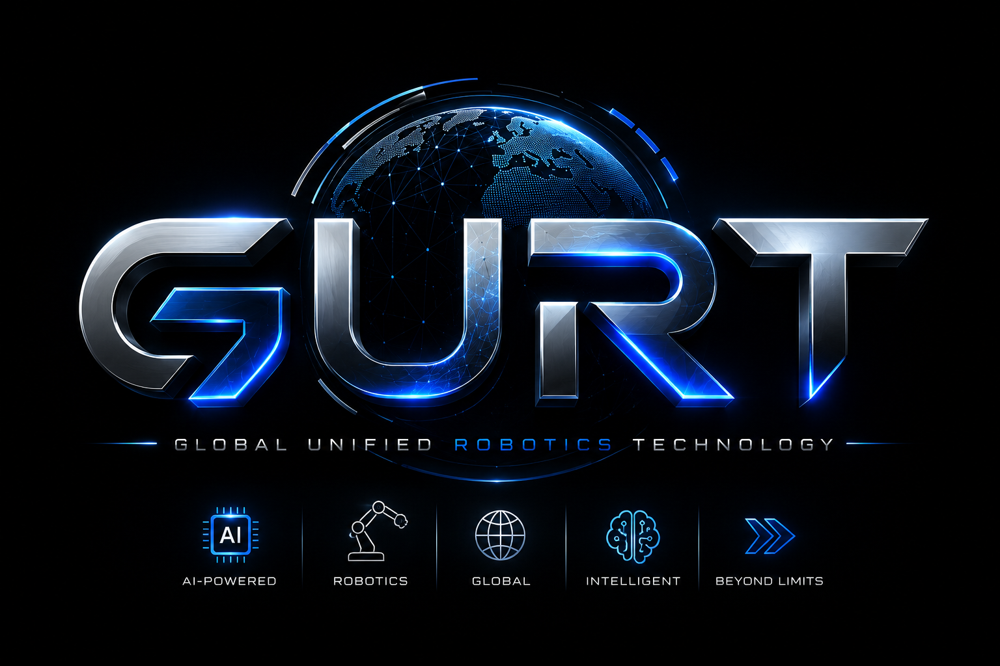

GURT
Global Unified Robotics Technology
About GURT
GURT Enterprises is focused on developing and exploring robotics technology through innovative engineering and unified systems.

Contact
Chief Executive Officer
Johann Theiss
CEO@gurt.enterprises
Chief Operating Officer
Connor Shamaly
COO@gurt.enterprises
Chief Technology Officer
Joshua Priddy
CTO@gurt.enterprises
Chief Financial Officer
Jose Gomez Toledo
CFO@gurt.enterprises